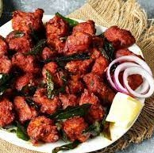

Chicken 65 is a fiery and flavorful South Indian dish known for its spicy kick and vibrant red color. This deep-fried chicken appetizer is a favorite among spice lovers.
Ingredients

- 500 grams boneless chicken pieces
- 2 tablespoons yogurt
- 1 tablespoon ginger-garlic paste
- 1 teaspoon red chili powder
- 1/2 teaspoon turmeric powder
- 1 teaspoon garam masala
- 1 teaspoon cumin powder
- 1 teaspoon coriander powder
- 2 tablespoons cornstarch
- 2 tablespoons rice flour
- 1 egg
- Salt to taste
- Curry leaves for garnish
- Oil for deep frying
Recipe
- In a mixing bowl, combine the boneless chicken pieces, yogurt, ginger-garlic paste, red chili powder, turmeric powder, garam masala, cumin powder, and coriander powder. Mix well to coat the chicken evenly with the spices. Allow it to marinate for at least 30 minutes.
- In another bowl, prepare a batter by mixing cornstarch, rice flour, egg, and a pinch of salt. Add a little water to make a thick and smooth batter.
- Heat oil in a deep frying pan over medium-high heat.
- Dip each marinated chicken piece into the batter, ensuring it's well coated, and then carefully drop it into the hot oil. Fry in batches to avoid overcrowding the pan.
- Fry the chicken until it turns golden brown and crispy. Remove the chicken pieces and drain excess oil on paper towels.
- In a separate pan, heat a little oil and add curry leaves. Sauté for a few seconds until they become fragrant.
- Add the fried chicken pieces to the pan with curry leaves and toss them to coat in the aromatic curry leaf oil.
- Serve hot as an appetizer or snack. Chicken 65 pairs well with mint chutney or lemon wedges.
Enjoy the fiery and flavorful Chicken 65 as a delicious appetizer or side dish!